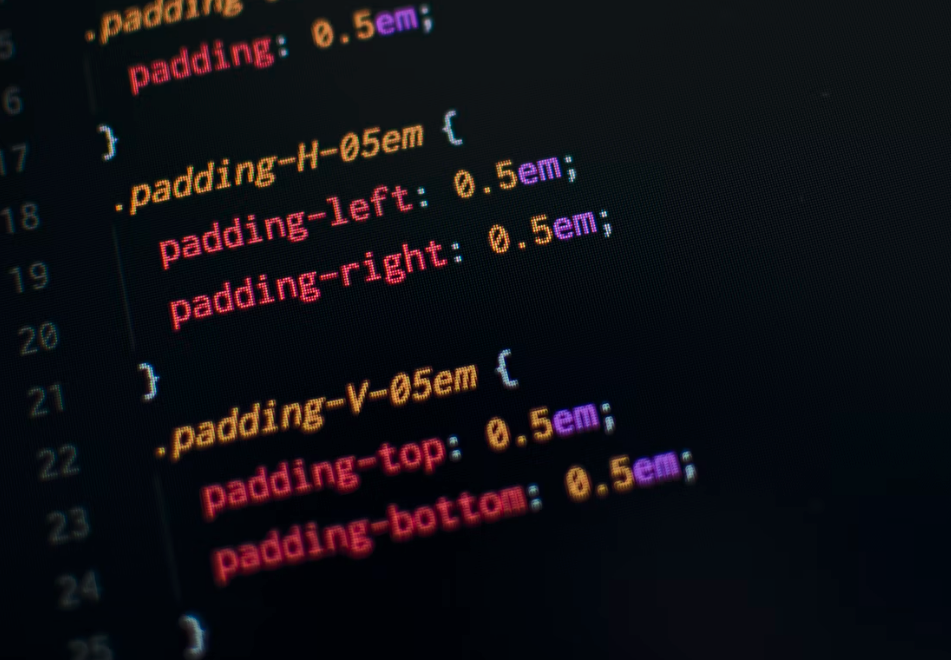

CSS
If you’re thinking about getting into web development, you’ve probably read about CSS while doing your background research. Not only is it a basic requirement if you want to become a Web Developer, but you’ll use it daily on every webpage you work on in this field.
CSS is also useful for people who may never build a web application. Whether you’re pursuing a career in web development or not, read on to learn more about what CSS is, what it’s used for, and why it could be beneficial for you to learn it. We’ll also show you how to get started learning CSS. It's a simple language to learn, whether or not you have knowledge of programming languages.
What is CSS?
CSS stands for Cascading Style Sheets. It’s a style sheet or presentational language that’s used to layout, format, and style documents that are written in HTML. Without CSS style sheets, every webpage you visit would look the same and use the default styles that your web browser sets. So, CSS is used to give webpages a unique look.
Similar to HTML, CSS is not a standard "programming language." You don't need to know about loops, variables, and other concepts you might pick up in a computer science course. Instead, CSS targets specific elements in an HTML file based on their attributes and applies a custom style. It can change the color and size of a heading, add animated effects, apply background images, make pages look great in both desktop and mobile browsers, and more.
Why learn CSS?
CSS is considered to be one of the easiest languages to learn. Its basic rules and syntax are simple, and you could start styling web pages after a single day of learning (if you’re already familiar with HTML). It may take longer to learn its more advanced features, but once you do, the same rules apply.
While CSS is a relatively simple language, its capabilities have evolved over the years. Here are some of the most popular ways CSS is used.
-
To build beautiful websites While it’s true you can build a complete website with only HTML, why would you want to? Without CSS, your website will look like any other site with black text, a white background, and blue links that turn purple after you click them. With CSS, you can build a website that fits your brand, is designed to portray a certain look and feel, and brings visitors back.
-
To customize content management systems WordPress, Drupal, and other content management systems make it easy for a non-technical person to publish articles and blog posts quickly. But eventually, you may want to customize the way the whole site or a single post looks. Knowing CSS will give you the ability to do just that without hiring a Web Developer.
-
To add animation to webpages Who says you have to know a programming language to add dynamic effects to a webpage? Modern CSS has a lot of animation features that don't require you to know JavaScript, and some of the effects you’ll find in CSS are even more advanced than those in JavaScript.
-
To make websites mobile-friendly In the past, all you had to worry about was if your site looked good in a desktop web browser. But that’s not the case anymore. Most people visit websites on their mobile devices, so sites need to look good on both desktops and mobile devices. With CSS, you can build webpages that do double duty.
How to learn CSS
Since there are many aspects of CSS that make it an easy language to learn, you can learn CSS by yourself, on your own schedule, anywhere you have an Internet connection. And it doesn't have to be boring, especially since you can start making changes to webpages relatively quickly, or take time away from your busy schedule.
